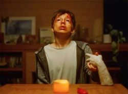
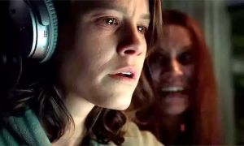
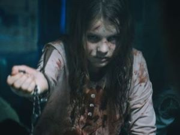
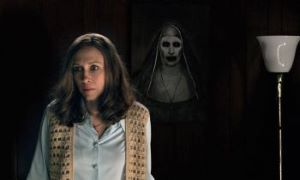
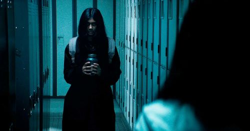
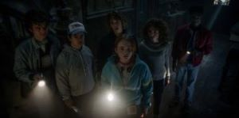
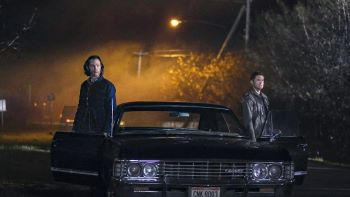
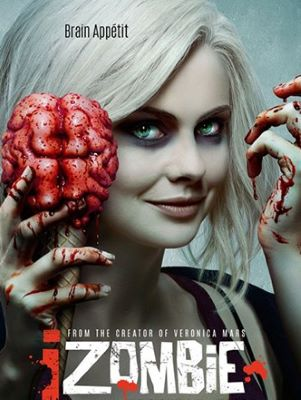

-
Talk to Me (Fale Comigo)
Mia (Sophie Wilde) e seus amigos descobrem como conjurar espiritos usando uma mão embalsamada e ficam viciados nessa adrenalina. Até que um deles vai longe demais, liberando e atraindo forças aterrorizantes
-
Smile (Sorria)
A vida da Dra. Rose Cotter(Sosie Bacon) muda completamente, após uma paciente morrer de forma brutal em sua frente
-
Prey for the Devil (A luz do Demônio)
Com caso de possesão demoniaca em alta como nunca visto antes, o Vaticano decidiu abrir uma escola voltada a treinar padres aptos para praticar exorcismos. Irmã Ann (Jacqueline Byers), a primeira exorcista Feminina que está entre os alunos da escola. É chamada para salvar a alma de uma jovem. Mas quem, ou o quê, a convidou?
-
The Conjuring 2 (A invocaçao do Mal 2)
Os Investigadores paranormais Ed Warren (PAtrick Wilson) e Lorraine Warren (Vera Farmiga) desembarcam em Londres, Inglaterra, para ajudar uma familia que acreditam ter algo
-
It Lives Inside (Não Abra!)
Não Abra! acompanhe Sam (Suri), uma adolescente de origem indiana que vive nos Estados Unidos. E após um desentendimento com a amiga, em um momento de raiva, Sam acaba quebrando o jarro, mas jamais poderia imaginar que, ao fazer isso, libertaria uma força demoníaca antiga e extremamente perigosa que sequestra sua amiga Tamira.
Filmes
-
The Originals
A família Original de Vampiros tentará retomar a a cidade de Nova Orleans, que eles ajudaram a construir várias décadas atrás. Eles irão encontrar velhos amigos e confrontam novos inimigos.
-
Stranger Things
Na pequena cidade de Hawkins, Indiana, os moradores são atormentados por uma dimensão alternativa hostil. um grupo de jovens amigos testemunha forças sobrenaturais e façanhas secretas do governo. Enquanto buscam respostas e desvendam uma série de mistérios extraordinários.
-
Supernatural (Sobrenatural)
Acompanhe a Historia dos irmãos Winchesters, Dean (Jensen Ackles) e Sam(Jared Padalecki) que seguem os passos do pai como caçadores, em uma jornada ao mundo sombrio e do inexplicável, Lutando contra seres sobrenaturais que vagam pela terra.
-
Izombie
A residente médica Liv (Rosa Mclver) acidentalemnte se transforma em um zumbi e aceita um emprego em um necrotério para satisfazer seu desejo por consumir cérebros humanos frescos, e lá descobre que ela absorve as memórias daqueles dos quais ela se alimenta.